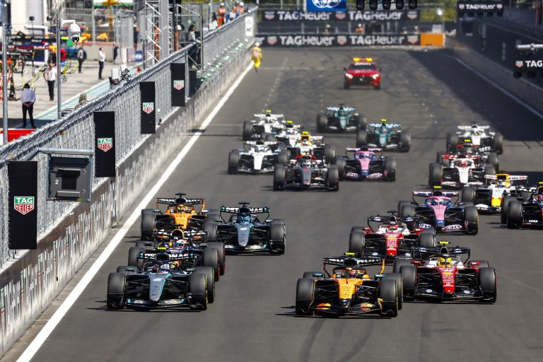
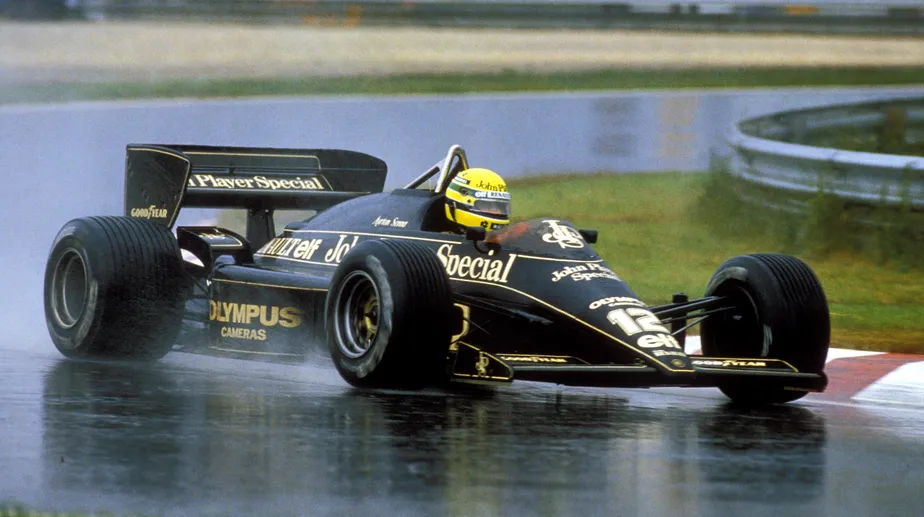
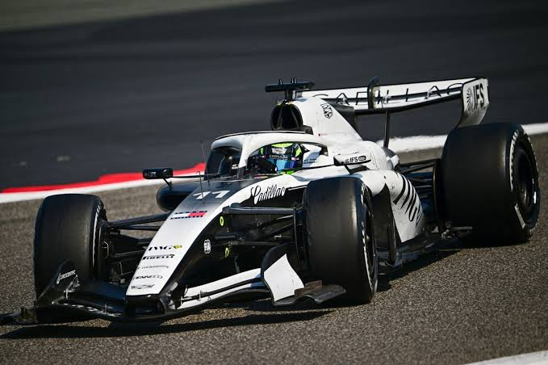
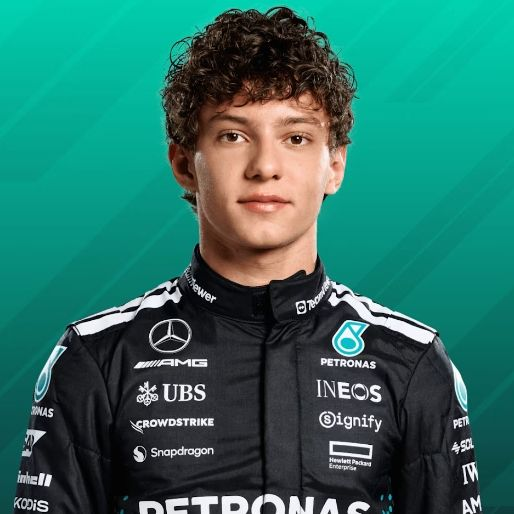
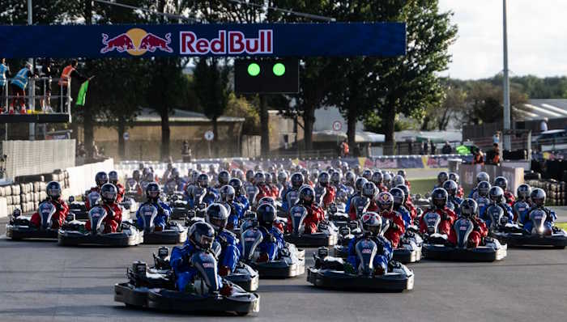
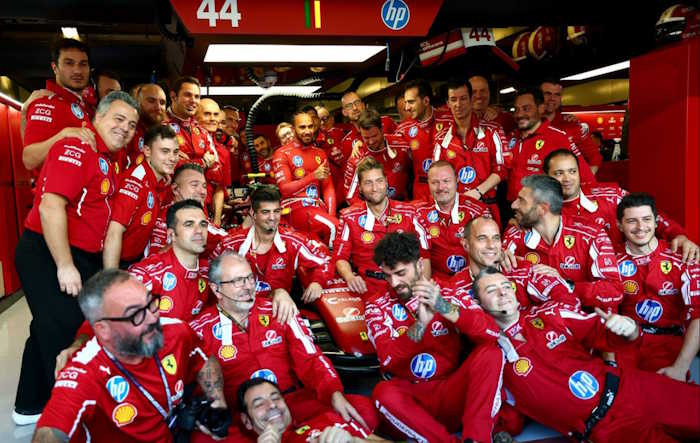

F1 divulga calendário de 2027
Serão 24 etapas com 10 finais de semana contendo corrida sprint.

Serão 24 etapas com 10 finais de semana contendo corrida sprint.

A nova pista da Fórmula 1 está gerando muitas controversias.

Carro da primeira vitória de Ayrton Senna terá 10 réplicas à venda.

"Temos que controlar as expectativas" respondeu a Cadillac a Pérez.
Norris, piloto da McLaren, perdeu 20 segundos durante o safety car virtual e terminou em terceiro.

Kimi Antonelli está cada vez mais perto de se tornar o campeão mais jovem da história da Fórmula 1.

Verstappen largou em P101 e ultrapassou 100 pilotos em apenas 35 minutos numa corrida de kart em Silverstone.

Hamilton nega ter pedido substituições na Ferrari e rebate rumores de crise após os atritos recentes com Leclerc.